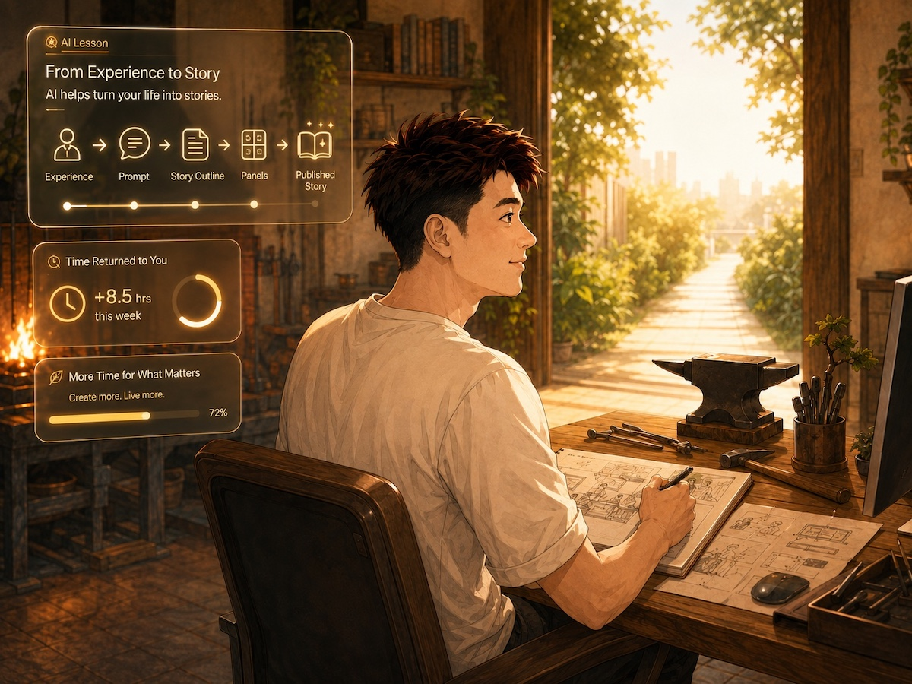
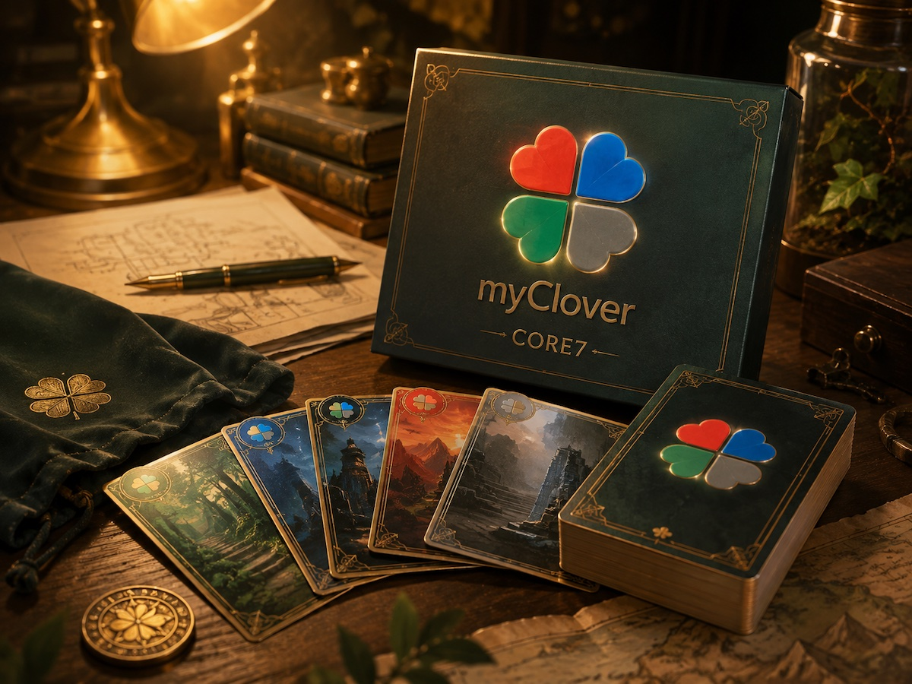

อ่าน Webtoon แล้วเข้าใจว่า AI มีไว้ทำไม
เรื่องจริงในรูปแบบการ์ตูนสี อ่านง่าย สนุก และพาไปเห็นว่า AI ไม่ได้มีไว้แค่ทำงานเร็วขึ้น แต่มันช่วยคืนเวลาให้ชีวิตได้อย่างไร เราให้คุณเห็นจริงในบ้านนี้ทั้งหมด
อ่าน Webtoon ตอนแรก →บ้านหลังนี้มีเข็มทิศนำทาง ที่ชี้ไปยังจุดล่าสุดที่คุณเดินถึงเสมอ
ไม่ต้องเล่นให้จบในรอบเดียว — ปิดไปแล้วกลับมาเมื่อไหร่ ก็กดเดินต่อจากตรงนั้นได้ทันที
พิธีเริ่มเกมของบ้านหลังนี้ — ขอให้โชคดีและสนุก
บ้านกำลังอ่านความคืบหน้าในเครื่องนี้ เพื่อปักหมุดภารกิจที่ควรทำต่อให้คุณ
รอสักครู่ บ้านกำลังจัดลำดับเส้นทางให้คุณ
3 หน้านี้บอกได้เร็วที่สุดว่าเวลาในบ้านหลังนี้คุ้มกับคุณไหม

เรื่องจริงในรูปแบบการ์ตูนสี อ่านง่าย สนุก และพาไปเห็นว่า AI ไม่ได้มีไว้แค่ทำงานเร็วขึ้น แต่มันช่วยคืนเวลาให้ชีวิตได้อย่างไร เราให้คุณเห็นจริงในบ้านนี้ทั้งหมด
อ่าน Webtoon ตอนแรก →6 ภารกิจสั้น ๆ ที่สอนหลักคิดซึ่งนำกลับมาใช้ซ้ำได้ ไม่ว่าจะวางแผนงาน สร้างเว็บไซต์ ทำคอนเทนต์ หรือออกแบบมื้ออาหารให้เหมาะกับตัวเอง
เริ่มภารกิจแรก →
ใช้หลักการจากบทเรียนฟรีทั้ง 6 บท แล้วพัฒนาจนกลายเป็นเกมที่เล่นกับ AI หรือ Online แข่งกับเพื่อนได้จริงบนหน้าเวป ชวนคนตรงหน้ามาลองแข่งได้เลย
ลองเล่น CORE7 →เลือกเพื่อให้บ้านจำว่าควรแนะนำอะไรให้คุณก่อนเท่านั้น ไม่ได้ล็อกตัวตน ไม่ได้ล็อกห้อง และเปลี่ยนสายได้ตลอด
ยังไม่อยากเลือกก็ไม่เป็นไร — เปิดหน้ารวมทั้ง 4 สาย เพื่ออ่านเทียบกันก่อนได้
คิดซะว่าบ้าน myclover.com หลังนี้คือเกม Open World — ค่อย ๆ เล่นแค่ วันละ 10 นาที ก็พอ แต่ถ้าอยากสนุกกว่า กดเข้า Guild หา Party เลย อย่าเล่นคนเดียว
เราเก็บหน้าแรกชิ้นแรกไว้ให้คุณดูหลังเรียนจบ เพราะการเห็นระยะห่างระหว่างงานชิ้นแรกกับงานปัจจุบัน จะช่วยให้เห็นชัดว่า งานที่ยังไม่สมบูรณ์สามารถค่อย ๆ เติบโตได้อย่างไรเมื่อเราเริ่มสร้างด้วย AI